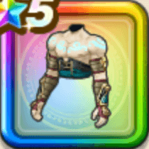

魔人の闘衣上
攻略班 9.5点 / メラ属性耐性+5%バギ属性耐性+5%イオ属性耐性+5%バギ属性耐性+5%スキルの斬撃ダメージ+7%メラ属性斬撃・体技ダメージ+4%ギラ属性斬撃・体技ダメージ+4%会心率+2%【晴れ】会心率+2%
くわしい特徴
【レベル別習得スキル】 Lv1メラ属性耐性+5% Lv3ガード率+3% Lv5バギ属性耐性+5% Lv8スキルの斬撃ダメージ+7% Lv8会心率+2% Lv10【晴れ】会心率+2% Lv12メラ属性斬撃・体技ダメージ+4% Lv15ギラ属性斬撃・体技ダメージ+4% Lv18イオ属性耐性+5% Lv20すばやさ+6 Lv23バギ属性耐性+5% Lv25守備力+5 【限界突破スキル】 1凸攻撃力+12 2凸すばやさ+12 3凸守備力+12 4凸さいだいHP+12